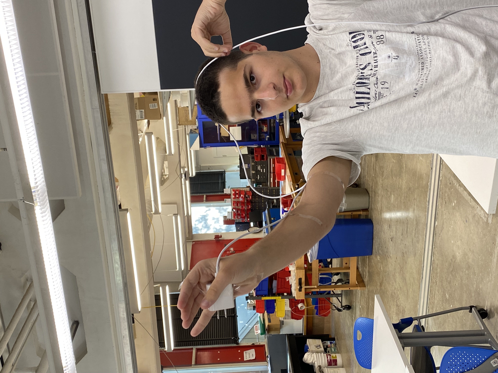
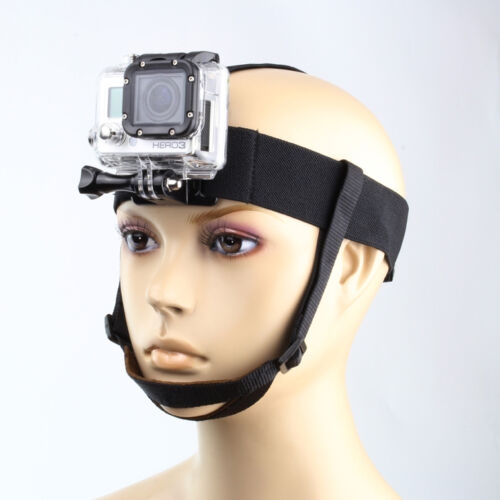

Many divers dive to experience the magnificient environment
underwater and want to capture this environment through underwater
cameras. When a diver is diving, they have to focus on many
life-critical things like their oxygen levels, how close are they to
their dive-partners,etc.However, with current underwater cameras, the
diver has to pay atention to wheather or not the camera will float
away from them(some product's solve this problem). However,the diver
has to pay their focus on which mode of the camera they're using and
switch the mode. Using a camera underwater should take the least
amount of focus of a diver as they have to focus on more important
things.
The Solution:
The solution I have is that there's a screen or set of buttons
strapped to the the diver right hand. The circuit is connected
to another electronic board towards the head of the person
where the camera is strapped to the face. The communication
with hand and the electronic board is done through electronic
cables that goes through the right arm
Potential Problems and Areas to Focus On
Every compenent of product have to be water proof as well
withstand pressures around 4atm (at 30m depth). Especially
the design of the system at the hand will be though as it has
to be easily usable, compact, and water-proof. I'll have strip
that'll hold the cables to the arm but they have be waterproof
as well as allow felexibility for the movement of the arm. I plan
a special casing for the go-pro and the micro-controller set-up.
The set-up at the hand must be tightly joined together so that it
works with various movements of head underwater and also deciding
how to control the go-pro, mechanically or by some electric or
wireless, will be though.
Some Images

In this photo the charger at my hand represents, the device on my hand.
The device communicates with the go-pro by a cable that's taped to my arm
On my actual product I plan to use velctro to attach the cable to the arm.
The cable in the photo wraps around my head because it's too long. In
the actual product it'll connect to the set-up at my head

This photo shows where I want the go-pro to be but I'll probably
place it higher to have room for the diver mask. This photo doesn't
I'll probably design my own casing so that it has a micro-controller
set-up as well.